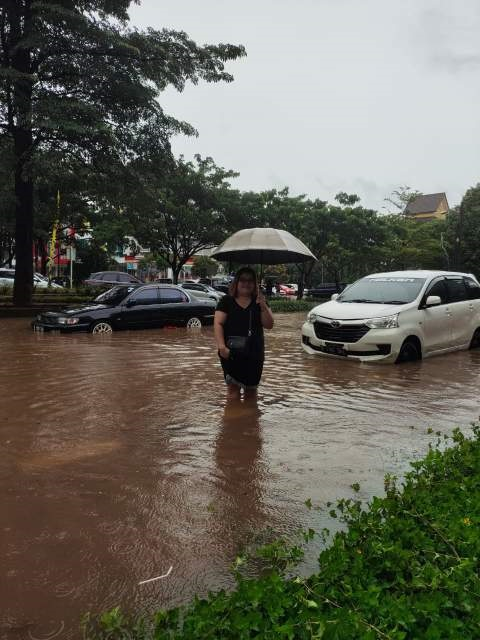

기후
|
 |
 |
우기
1. 인도네시아 계절은 보통 건기와 우기로 나뉜다. 건기에는 정말 비가 한방울도 안오고, 우기에는 기다렸다는 듯이 하루가 멀다하고 비가 쏟아진다.
2. 보통 우기에는 11월에서 4월 정도까지 이어지고, 나머지 기간은 건기로 구분된다. 우기에는 홍수(banjir)를 매일 단위로 눈 앞에서 경험 할 수 있다.
3. 이시기에는 집에 침수피해가 크면 누전차단기(두꺼비집)도 내리기때문에 연락도 잘 되지 않고, 출퇴근시간에 길이 엄청나게 막힌다.